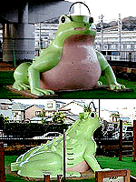
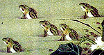
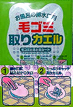

|
巨大カエルすべり台が出現！ カエルで復興、びよおおおんと跳べ神戸！
 【神戸発=大阪かずR同志記者】神戸市、山陽電鉄.月見山駅ちかくの公園で「かえるすべり台」を発見。高さ２m以上のりっっぱなかえる君。この日は平日で人の姿は見かけませんでしたが休日ともなるとこのかえる君の背中ですべって遊んでいる子供もたくさんいるんでしょうね。小さな頃からカエラー養成にぴったり!?ですね。じつはこの滑り台のすぐ後ろに電車の線路が見えると思います。そこには何でもない坂道の途中の踏切。実は平松愛理さんの『駅のない遮断機』という曲のモデルになった踏切です。 その踏切を探す途中にたまたま発見しました。最初後ろから見たものですから背中のトゲトゲを見て「恐竜かいな？」と正面に回ればやっぱり“かえる”。高速道路の下でちょっと目立ちにくいのは難ですがなかなかいいでしょ？
全国展開せよ！カエルすべり台【全国かえる奉賛会】斬新なデザインは、恐竜風のカエルだ。全国の自治体で公園街路関係の部署に勤務するカエラー公務員は、新年度予算に『すべての公園にカエルすべり台を設置する調査費』を盛り込むように頑張ろう！公園にこんかカエルすべり台があれば、子どもたちも、カエルと遊べばよいので、他になにもいらないはずである。福岡かえる展２の開催決める！【全国かえる奉賛会】全国かえる奉賛会は、このほど、福岡市内でカエル会議を開き、平成１２年６月６日から１１日までの６日間、福岡市中央区大名を主会場に、『福岡かえる展２』を開催することに決めた。
会議は居酒屋で、ごらんのように定例会議の際に着用が義務付けられているカエル帽を着用して行ったのだが、周囲の他の客も注目度も抜群だった。
国民全員が、会社を終わったらカエル帽をかぶるようになるまで、われわれカエラーは努力を継続しようではないかあ。
佐賀のカエル劇団がカエル演劇！【佐賀発=神野公園のかえる同志記者】かえる＠劇団『Ziシアター』が、２０００年１月２２・２３日に佐賀市のエスプラッツで行った劇団『Ziシアター』第９回公演『１月の桜』に登場したかえるくんです。脚本家の書いた『かえるのマスコットが登場。中から人が登場』という短い文章のために造らされたものです。登場のBGMは、もちろん『ふりむけばカエル』（矢野顕子）。音楽にあわせてリズムをとる様はたいへんラブリーで観客のハートをがっちりキャッチしました。 かえるの製作期間は、約２ヶ月で、登場時間は１公演あたり約２分でした。レンタル相談受付中です。 福岡かえる展２に出場を！【全国かえる奉賛会】今年も開催を決定した、福岡かえる展２の会場で、カエル公演してくれええええ。偉大なカエル脚本家に祝福を！ 「皇室の名宝展」カエルパッドを入手！【東京発=Shigeko同志記者】「皇室の名宝展」に行きまして、うわさのカエルマウスパッドを入手いたしました。おみやげコーナーでマウスパッドは発見しました。「池辺群虫図（部分） 動植綵絵のうち」伊藤若冲 江戸時代（１８世紀）=宮内庁三の丸尚蔵館蔵=だそうです。 本館のミュージアム・ショップなるところもちょっと覗いてみたら、「鳥獣人物戯画巻断簡（紙本墨絵 平安時代 １２世紀）」を描いた、別のナイスなカエルパッドを発見。常設のためこちらはいつでも売っているようです。  これは便利！排水口ごみ取りカエルシート！【東京発=雛雛同志記者】先日100円ショップに行ったら、排水口のゴミとりがカエルの形になっているものを見つけました。同じ物でペンギンのものもあったのですが、カエルの方が使用説明に力が入っている感じがします。【全国かえる奉賛会】これは、便利だ。カエルシートさえあれば、ゴミ処理もらくちんだ。シートにカエルの目玉などを印刷してもらうと、さらにステキな、商品に仕上がるであろう。
説明書に力が入るのは、わかるなー。だって、たっぷり取れて取りカエル！などと、キャッチコピーしやすいので、説明書作っている人もついつい力が入るのは、わかるのであるー
モローストラップ！残数１体に！【福岡発=弟子りょーこ様同志記者】売り出しと同時に、モロー君が、どんどんもらわれていって、うれしいような、さみしいような。。。早くもあと１人になってしまいました。『モロー036号・携帯ストラップ！革命的紅少兵赤色スカーフ仕様赤羽根飾り』というとんでもなく長い標題にしてしまいましたあ。投稿採用者に武功カエル徽章を授与！ |
かえる古新聞過去に取り上げた記事を見出し付きで一覧したい人は、ここをクリック◆創刊号を見る◆先週号を見る◆話題の号を見る◆かえる新聞の昔を読む
|
私も入っています。。全国かえる奉賛会
大王様に会うには、このバナーをクリック。ずっと奥に写真館があるぞ。全国かえる奉賛会に入会するには、自分のホームページのどこかに、下の部分を追加するとバナーがリンク付きで表示されるぞ。どんどん入会しましょー |


|